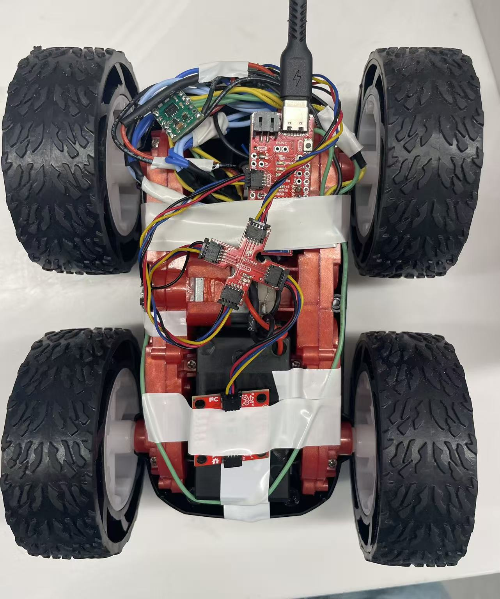

Lab 4: Artemis + Bluetooth
Lab 4: Pre Lab
In the prelab, we are asked to think of pin used for control on the Artemis, separate power sources for Artemis and motors & drivers. I used A2 & A3 for motor driver 2; A15 & A16 for motor driver 1. I thought using two sides of Artemis board can space out connection from two sides. They are all analog pins through which I can send PWM signals. I used different battery sources to provide big currents to motors which is necessary for FAST robotics. Besides, having independent power sources avoid abnormal change in motor voltage would not interfere BLE connections.

Task 1 Power Check
To power the car properly and avoid burning the motor, the voltage range for motor driver is 2.7 to 10.8V. The battery I used is 3.7V, which is within the range.
Task 2 PWM Signal Generation
To verify Artemis generating proper PWM control signals and that duty cycle can change
the modulate motor power, I have code below. The power supply is connected by soldering, as
well as ground. When capturing signals by oscilliscope, I used alligator clips connecting to
output port and ground.
I set the speed to be 80 as it is hard to touch the output pin stably while baring the shaking
from high-speed wheel rotation. It is within the range 0 to 255 range for PWM signals. By setting
the speed, I can decide the duty cycle (current value / top value).


// Motor 1 pins
#define MOTOR1_IN1 A16
#define MOTOR1_IN2 A15
// Motor 2 pins
#define MOTOR2_IN1 A3
#define MOTOR2_IN2 A2
int pwm_speed = 80; // PWM speed
void setup() {
Serial.begin(115200);
// Set as output
pinMode(MOTOR1_IN1, OUTPUT);
pinMode(MOTOR1_IN2, OUTPUT);
pinMode(MOTOR2_IN1, OUTPUT);
pinMode(MOTOR2_IN2, OUTPUT);
}
void loop() {
// move forward
Serial.println("Move forward");
forward(pwm_speed);
delay(3000);
//stop
Serial.println("Stop");
stop();
delay(3000);
}
// movement functions
void forward(int speed) {
analogWrite(MOTOR1_IN1, speed);
analogWrite(MOTOR1_IN2, 0);
analogWrite(MOTOR2_IN1, speed);
analogWrite(MOTOR2_IN2, 0);
}
// stop functions
void stop() {
analogWrite(MOTOR1_IN1, 0);
analogWrite(MOTOR1_IN2, 0);
analogWrite(MOTOR2_IN1, 0);
analogWrite(MOTOR2_IN2, 0);
}
Task 4 Wheel Test (Two Direction)
I commented out the code for the second motor to have wheels spinning on the table. I added the code below to enable the spinning in the other direction.
void loop() {
....
// move backward
Serial.println("Move backward");
backward(pwm_speed);
delay(3000);
//stop
Serial.println("Stop");
stop();
delay(3000);
}
void backward(int speed) {
analogWrite(MOTOR1_IN1, 0);
analogWrite(MOTOR1_IN2, speed);
analogWrite(MOTOR2_IN1, 0);
analogWrite(MOTOR2_IN2, speed);
}
Watch the video of both sides of wheels spinning supported by 850 mAh battery.

Watch the video of self-support car going backward and forward and ultimately stopping.Task 5 PWM Lower Limit
When I set PWM speed to be 31 (30-35), the car staggered with minimum movement for moving forward. To achieve a on-axis turn, it requires 130-140 for PWM speed to overcome the friction on the ground. The lower limit really depends on ground texture, so there would be adjustment needed in the future when testing in different environment. I also test the code to make a 90 degree turn with approximately 1 meter radius, which requires a ratio of 2.5 (Motor 2 speed / Motor 1 speed).
Task 6 Two-wheel Calibration
Watch the video of calibrating the car to run a straight line.It takes many trials for calibration, as it is not simply a ratio problem. Sometimes same ratio works for higher speed but fails for lower speed. The video demoed that car gets away from the line but then slightly gets back to the line which may result from an unstraight line typed on the ground. Besides, the noise from gear box also involved into the deviation. This experience also indicates the difficulties to control the car with open loop system.
Task 7 Open Loop Control
void loop() {
if (loop_count >= 1){
stop();
return;
}
Serial.println("Move forward");
forward(pwm_speed);
delay(500);
Serial.println("Stop");
stop();
delay(500);
Serial.println("Make On-axis Turn");
turn(pwm_speed);
delay(1000);
Serial.println("Stop");
stop();
delay(700);
Serial.println("Move forward");
forward(pwm_speed);
delay(1000);
loop_count++;
}
Open loop control is hard to control the car as expected. I intended to do a U-turn run like racing car to have them going though those turns with big angles, in my case ideally 180 degrees. However, the video demonstrated that it had a hard time rerunning after two wheels spinning with different direction in high speed. It requires higher power.
Reference
I received extensive help from Michelle Yang in terms of code for controlling car.
I referred to Jeffery Cai and Aidan Derocher for pins for soldering, formatting, and
comparing parameters (lower limits).
I borrowed Apurva's car for tasks after task 6 as I burned one of my motor drivers at 12:38am
on the due day.